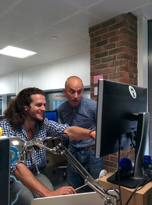

2.5 YEARS AMONG TECH STARTUPS
My experience as a Software Engineer
Ivan Fraixedes
T: @ifraixedes // W: ivan.fraixed.es
Let's get a definition of the 2 coolest words
- startup is a company, a partnership or temporary organisation designed to search for a repeatable and scalable business model
- tech-startup does things relating to microelectronics or anything related to electronics, or digital products such as websites, phone apps, software, cloud services, ...
- entrepreneur: ...... buff.... Several people have given different definitions, so I've taken those:
- who organizes or operates his/her business or businesses
- who takes initiative, accept risk of failure
- who understands their own strengths and weakness
Hang on, I haven't come to tell theory
Internet is full of this and still working better than Google
Moreover I'm NOT currently an ENTREPRENEUR so, I'm NOT COOL
But
I moved to London and I spent 0.5 years observing entrepreneurs and its startup ecosystem
and thereafter I've been working for 2 tech-startups for 2 years
Frist one
One founder and nobody else
I joined as Software Engineer, Developer, DevOps, .... too long, so let's simplify
"The guy" who had to create the product and do whatever the product needs to run
Talk about my experience in iWaz.at
Second one
Two founders and a bunch of guys, they deserve that I call them "A TEAM"
We take care, as well as the first one, of everything, but we can balance the work load, share the knowledge, discuss ideas and more!
Talk about my experience in DIGIT
My thoughts about working for a startups
Through my experience in Startups, I've found ...
Excitement
Awesome company culture


People love what they do

What is my perception
The most of the tech-startups are quite ambitious
Internet have so much influence on them, you can open your business to big amount of customer inside and outside the borders, however the competition is huge.
Due the amount, today entrepreneurs has created their ecosystems, which provide help and motivation.
They are used to be more transparent than big corporates.
Differences between old entrepreneurs and today ones Internet has changed the things Ecosystem
- Provided by others and for that purpose moreover of becoming a new businesses: Co-working spaces, Accelerators, Incubators
- Indirected and community: Ecosystem, Internet, Crowd funding, Startups providing affordable services, Open source
Questions???
Please, don't be hard
Credits
- Thanks to my current team, and the guy that provided the live chat
- Rasthy De Los Reyes, General Manager at Rainmaking Loft (www.rainmakingloft.com)
- Charlie Casey, Co-founder of Loyalty Lion (loyaltylion.com)
- Deepak Taylor, Founder of Latest Free Stuff (www.latestfreestuff.co.uk)
- Oli Johnson, Co-Founder of Small Steps Venture (www.smallstepventures.com) and Rainmaking Loft (www.rainmakingloft.com)
- Sources